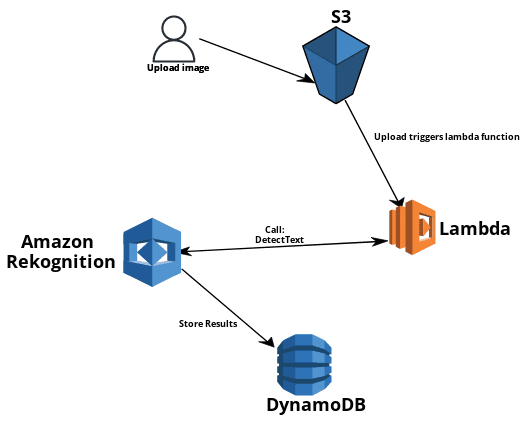

Giovannie Encarnacion
Cloud Practitioner
Cloud Practitioner

In order to provision and release the infrastructure quickly, I created this Cloudformation template: **The table name, hashkey and range key we will use in this example are: plateindex, vehicle, and filename respectively.
S3 And DynamoDB Table:The Lambda Function was created with the latest version of Python, triggered via object creation in S3 and utilizes an IAM role with Amazon Rekognition, S3, DynamoDB and Cloudwatch Log permissions.
**Table name, partition key and sort key (plateindex, vehicle, filename) are referenced in the Python code below:The Lambda Function will need a policy that allows: writing logs to CloudWatch, call the Amazon Rekognition Detect Text API, read objects from the S3 bucket, read/write to the DynamoDB table and execute queries on the DB table.
Policy will look similar to this:The Lambda Function will invoke upon uploading image to S3


This project was a great learning experience into CloudFormation, CloudWatch Logs, DynamoDB, Amazon Rekognition and Lambda. I thoroughly enjoyed working on this project and look to evolve this architecture in the future with the addition of: SNS, API Gateway and a website to display the results of the analyzed image.